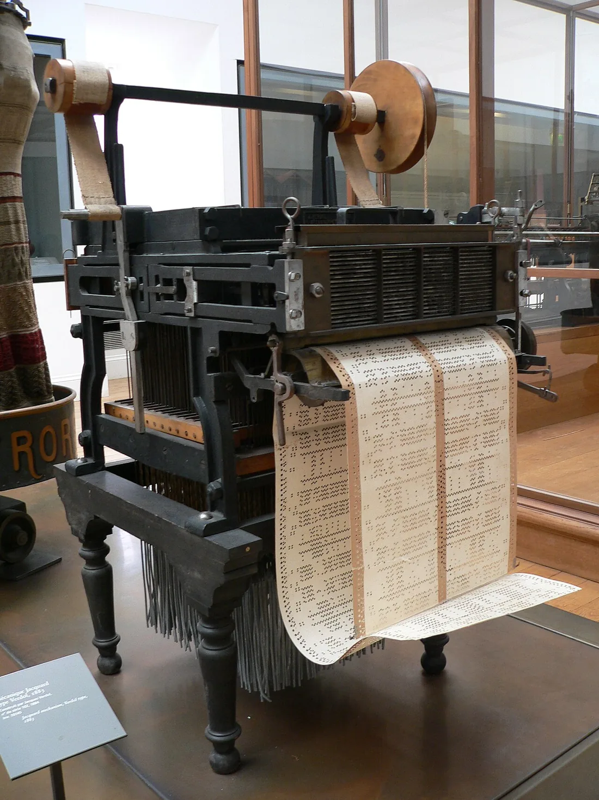

Recupera
De memória, sem abrir o caderno.
De memória
Usar inteligência artificial num trabalho é batota?
Confirmar
Não por si. O problema é esconder que a usaste, assinar o que não criaste ou imitar alguém sem o dizer.
Como se verifica uma imagem?
Confirmar
Pela fonte, pela data, pela pesquisa inversa e pelo pormenor que não bate certo. A pergunta é quem publicou, e porquê.
Que elemento da vossa peça ficou sem crédito na revisão?
Vê
Observa primeiro. Lê depois.
Material 1 de 4: O tear de Jacquard, outra vez
Na sessão 01, procuraste a tira perfurada. Quem olha para este tear consegue ler a regra que faz o tecido?

No tear de Jacquard, as regras estavam em cartão, à vista. Num caso, as regras que decidem o que se vê estão muitas vezes escondidas. Analisar um caso é pedir o cartão: que regra decidiu, quem a escreveu, onde está escrita.
Material 2 de 4: A carta de «Gil Goes», 1917
Lê como um leitor de 1917. O que te faria acreditar?
Não era a carta de um leitor. Gil Goes era um pseudónimo de Reinaldo Ferreira, então com 19 anos, e a carta era o primeiro episódio de uma ficção publicada como se fosse verdadeira.
Aviso de método das Margens: o jornal de 1917 não foi visto em linha. O relato vem de fontes secundárias que concordam entre si.
Material 3 de 4: «este nome ou outro que os leitores quiserem»
Em que difere este aviso da carta de 1917?
Material 4 de 4: As três fontes do caso do músico
Lê uma fonte de cada vez. Diz para que serve cada uma, e para que não serve.
Fonte 1: A mensagem da plataforma
Diz que a conta «violou as regras da comunidade». Não diz qual, nem quando, nem como recorrer.
Fonte 2: Uma reportagem de um jornal local
Jornalista identificado. Ouviu o músico, pediu comentário à plataforma e descreve casos semelhantes.
Fonte 3: Um vídeo de reação
Um criador de conteúdos, sem fontes. Indigna-se, acusa a plataforma de censura e pede partilhas.
Obras e materiais
Decide
Primeiro em silêncio, cada pessoa. Depois em grupo.
Sem ecrã
Primeiro, em silêncio
Quatro frases sobre o músico. Quais são factos, quais são suposições e qual é uma opinião?
- «A conta foi suspensa a 3 de março; a plataforma confirmou por escrito.»
- «Deve ter sido por causa de uma denúncia de um concorrente.»
- «O concerto era a 4 de março; o cartaz está arquivado.»
- «A plataforma odeia músicos independentes.»
Três minutos. Escreve a tua resposta e uma razão no cartão de decisão. Depois, uma volta: cada pessoa lê o seu cartão, sem comentários.
Depois, em grupo
- Por que fonte começam, com qual a confrontam, e que segunda fonte independente vão procurar?
- Um blogue repete a nota de uma empresa. São duas confirmações, ou uma?
- Cada pessoa escolhe o caso que vai analisar, da lista aprovada pelo docente. O grupo confere os critérios: real, datado, com duas fontes independentes, sem menores nem pessoas privadas.
No fim, registem a decisão e uma razão que ficou vencida.
Comparar razões
Um facto tem data e fonte; «deve ter sido» é suposição: ainda não está confirmada. Duas fontes que não dependem uma da outra reduzem o erro. Um assistente de inteligência artificial não é uma fonte.
Faz
Em papel ou no ficheiro do grupo.
Em papel
A análise crítica de um caso vale 20% do módulo. É individual, com revisão em pares.
- Responde às quatro perguntas, por ordem: o que aconteceu (factos, com data e fonte); quem decidiu (pessoa, empresa, máquina); com que regras (lei, regras da casa, algoritmo); o que podia ter sido diferente, e que direito o permitia.
- Usa duas fontes independentes para cada facto importante.
- Em grupo, liguem um dos casos à regra do vosso Contra-feed, numa frase que possa entrar no guião (na sessão 07 vão usá-la no momento em que o público percebe a regra).
Se faltar tempo, a análise fica a meio e acaba nos primeiros minutos da sessão 07, antes da entrega.
Rever com outra pessoa
Em pares: quem revê marca cada frase como facto com fonte, suposição ou opinião.
Quem revê marca uma coisa que se percebe e uma que falta, e faz uma pergunta.
GuardarCasa 6 do mapa do Contra-feed: O caso
O caso real, com duas fontes independentes, e a frase para a viragem.
- 1A regra (casa anterior)
- 2O sinal e o custo (casa anterior)
- 3As regras da casa (casa anterior)
- 4A pergunta e o público (casa anterior)
- 5Os meios e os créditos (casa anterior)
- 6O caso (casa de hoje)
- 7Conceito e guião v1 (casa seguinte)
- 8Ensaio e guião v2 (casa seguinte)
- 9Defesa e manifesto (casa seguinte)
- 10O que o público viu (casa seguinte)
Contorno cheio: casas anteriores. Preenchida: a casa de hoje. Tracejado: casas seguintes.
Leva
Em papel, antes de sair.
Em papel
Em papel, antes de sair
Numa frase: que fonte independente procuras para confirmar o facto principal do teu caso, e porquê?
Confirma
- Nomeias o facto principal.
- A fonte não depende da primeira.
- Separas o que sabes do que supões.
Depois, no telemóvel
Dois ou três dias depois da sessão.
O registo fica neste aparelho.